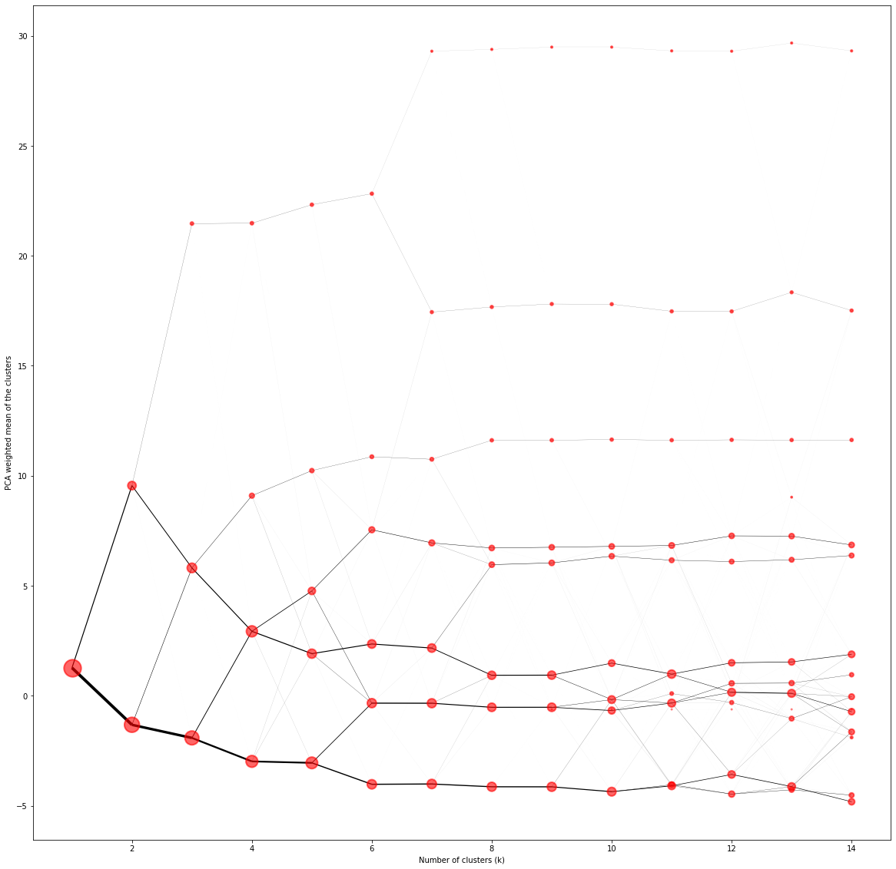
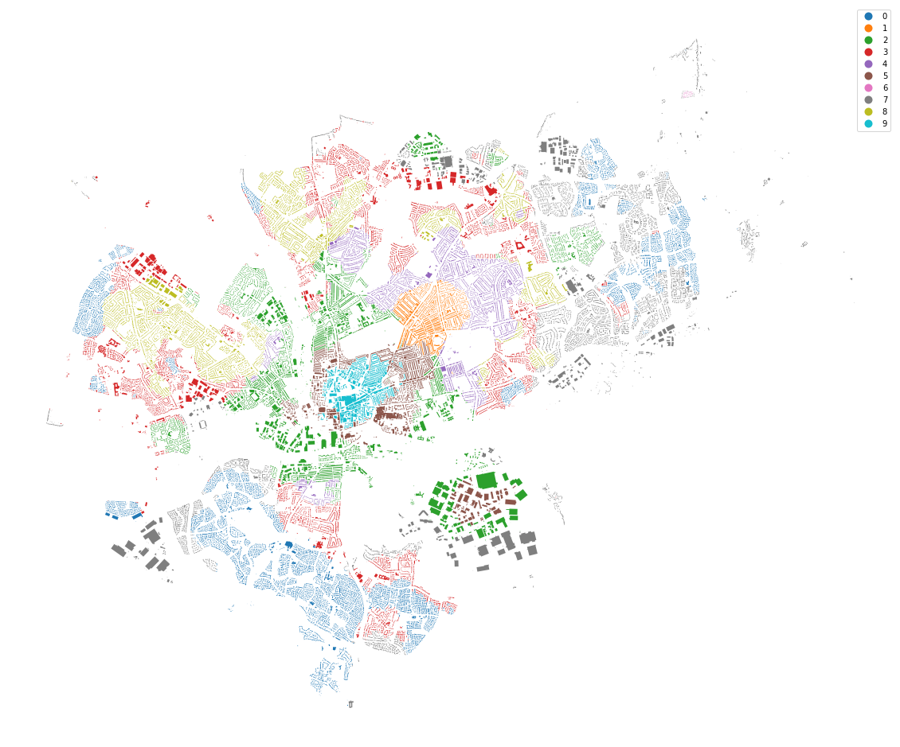
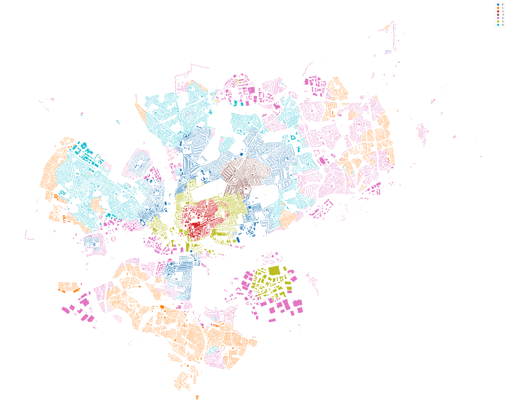

import geopandas as gpd
import pandas as pd
import numpy as np
import momepy
import libpysal
from tqdm import tqdm
from sklearn import preprocessing
from clustergram import Clustergram
chunks = gpd.read_parquet('../../urbangrammar_samba/spatial_signatures/local_auth_chunks.pq')
chunks
| geometry | chunkID | |
|---|---|---|
| lbls | ||
| 0.0 | POLYGON ((347746.989 428617.983, 347611.489 42... | 0 |
| 1.0 | POLYGON ((466755.502 343585.209, 466723.708 34... | 1 |
| 2.0 | POLYGON ((492814.052 165900.388, 492653.958 16... | 2 |
| 3.0 | POLYGON ((555738.312 145126.176, 555646.807 14... | 3 |
| 4.0 | POLYGON ((539183.091 274691.315, 539231.597 27... | 4 |
| ... | ... | ... |
| 98.0 | POLYGON ((416824.197 290592.777, 416904.996 29... | 98 |
| 99.0 | POLYGON ((377928.269 131214.407, 377903.871 13... | 99 |
| 100.0 | POLYGON ((356179.971 588517.721, 356353.165 58... | 100 |
| 101.0 | POLYGON ((443213.856 409836.842, 443218.555 40... | 101 |
| 102.0 | POLYGON ((406868.828 366991.443, 406922.429 36... | 102 |
103 rows × 2 columns
from shapely.geometry import Point
nhmptn = gpd.GeoSeries([Point(-0.9087, 52.2375)], crs=4326).to_crs(27700)
chunks[chunks.intersects(nhmptn[0])]
| geometry | chunkID | |
|---|---|---|
| lbls | ||
| 8.0 | POLYGON ((496531.705 246753.398, 496484.411 24... | 8 |
lon = gpd.GeoSeries([Point(-0.12807355616611568, 51.50604696235029)], crs=4326).to_crs(27700)
chunks[chunks.intersects(lon[0])]
| geometry | chunkID | |
|---|---|---|
| lbls | ||
| 15.0 | POLYGON ((529406.101 170556.868, 529402.220 17... | 15 |
data = gpd.read_parquet("../../urbangrammar_samba/spatial_signatures/morphometrics/cells/cells_8.pq")
data.columns
Index(['hindex', 'tessellation', 'buildings', 'sdbAre', 'sdbPer', 'sdbCoA',
'ssbCCo', 'ssbCor', 'ssbSqu', 'ssbERI', 'ssbElo', 'ssbCCM', 'ssbCCD',
'stbOri', 'sdcLAL', 'sdcAre', 'sscCCo', 'sscERI', 'stcOri', 'sicCAR',
'stbCeA', 'mtbAli', 'mtbNDi', 'mtcWNe', 'mdcAre', 'ltcWRE', 'ltbIBD',
'nodeID', 'sdsSPW', 'sdsSWD', 'sdsSPO', 'sdsLen', 'sssLin', 'ldsMSL',
'mtdDeg', 'lcdMes', 'linP3W', 'linP4W', 'linPDE', 'lcnClo', 'ldsCDL',
'xcnSCl', 'mtdMDi', 'lddNDe', 'linWID', 'edgeID_keys', 'edgeID_values',
'edgeID_primary', 'stbSAl', 'sddAre', 'sdsAre', 'sisBpM', 'misCel',
'mdsAre', 'lisCel', 'ldsAre', 'ltcRea', 'ltcAre', 'ldeAre', 'ldePer',
'lseCCo', 'lseERI', 'lseCWA', 'lteOri', 'lteWNB', 'lieWCe'],
dtype='object')
characters = ['sdbAre', 'sdbPer', 'sdbCoA',
'ssbCCo', 'ssbCor', 'ssbSqu', 'ssbERI', 'ssbElo', 'ssbCCM', 'ssbCCD',
'stbOri', 'sdcLAL', 'sdcAre', 'sscCCo', 'sscERI', 'stcOri', 'sicCAR',
'stbCeA', 'mtbAli', 'mtbNDi', 'mtcWNe', 'mdcAre', 'ltcWRE', 'ltbIBD',
'sdsSPW', 'sdsSWD', 'sdsSPO', 'sdsLen', 'sssLin', 'ldsMSL',
'mtdDeg', 'lcdMes', 'linP3W', 'linP4W', 'linPDE', 'lcnClo', 'ldsCDL',
'xcnSCl', 'mtdMDi', 'lddNDe', 'linWID',
'stbSAl', 'sddAre', 'sdsAre', 'sisBpM', 'misCel',
'mdsAre', 'lisCel', 'ldsAre', 'ltcRea', 'ltcAre', 'ldeAre', 'ldePer',
'lseCCo', 'lseERI', 'lseCWA', 'lteOri', 'lteWNB', 'lieWCe']
gdf = gpd.GeoDataFrame(data[characters], geometry=data.tessellation.centroid)
%time W = momepy.sw_high(k=10, weights=libpysal.weights.Queen.from_dataframe(data, geom_col='tessellation'))
/opt/conda/lib/python3.8/site-packages/libpysal/weights/weights.py:172: UserWarning: The weights matrix is not fully connected:
There are 15 disconnected components.
There are 9 islands with ids: 146559, 147775, 147875, 147883, 147901, 148577, 149323, 149342, 149349.
warnings.warn(message)
CPU times: user 5min 44s, sys: 10.7 s, total: 5min 55s
Wall time: 5min 55s
convolutions = {}
for c in characters:
convolutions[c] = []
# measure convolutions
for i, geom in tqdm(gdf.geometry.iteritems(), total=data.shape[0]):
neighbours = W.neighbors[i]
vicinity = gdf.iloc[neighbours]
distance = vicinity.distance(geom)
distance_decay = 1 / distance
for c in characters:
values = vicinity[c].values
sorter = np.argsort(values)
values = values[sorter]
nan_mask = np.isnan(values)
if nan_mask.all():
convolutions[c].append(np.array([np.nan] * 3))
else:
sample_weight = distance_decay.values[sorter][~nan_mask]
weighted_quantiles = np.cumsum(sample_weight) - 0.5 * sample_weight
weighted_quantiles /= np.sum(sample_weight)
interpolate = np.interp([.25, .5, .75], weighted_quantiles, values[~nan_mask])
convolutions[c].append(interpolate)
33%|███▎ | 48833/149525 [04:55<09:24, 178.38it/s]<ipython-input-15-07ef19d7cbf0>:21: RuntimeWarning: invalid value encountered in subtract
weighted_quantiles = np.cumsum(sample_weight) - 0.5 * sample_weight
<ipython-input-15-07ef19d7cbf0>:22: RuntimeWarning: invalid value encountered in true_divide
weighted_quantiles /= np.sum(sample_weight)
100%|██████████| 149525/149525 [15:16<00:00, 163.08it/s]
%time conv = pd.DataFrame(convolutions, index=data.index)
%time exploded = pd.concat([pd.DataFrame(conv[c].to_list(), columns=[c + '_q1', c + '_q2',c + '_q3']) for c in characters], axis=1)
CPU times: user 1.87 s, sys: 44 ms, total: 1.91 s
Wall time: 1.91 s
CPU times: user 11.9 s, sys: 356 ms, total: 12.3 s
Wall time: 12.3 s
scaler = preprocessing.StandardScaler()
scaled_data = scaler.fit_transform(exploded)
mask = gdf.within(Point(475000, 260000).buffer(10000))
nh_data = scaled_data[mask]
nh_data.shape
(36396, 177)
nulls = np.isnan(nh_data)
nh_data[nulls] = 0
cg = Clustergram(range(1, 15), n_init=10)
cg.fit(nh_data)
K=1 fitted in 1.0541980266571045 seconds.
K=2 fitted in 1.1690411567687988 seconds.
K=3 fitted in 1.663944959640503 seconds.
K=4 fitted in 1.7653963565826416 seconds.
K=5 fitted in 2.0640511512756348 seconds.
K=6 fitted in 2.0697145462036133 seconds.
K=7 fitted in 2.2315945625305176 seconds.
K=8 fitted in 2.809513568878174 seconds.
K=9 fitted in 2.948035955429077 seconds.
K=10 fitted in 3.0751941204071045 seconds.
K=11 fitted in 3.4062979221343994 seconds.
K=12 fitted in 3.78933048248291 seconds.
K=13 fitted in 3.949535846710205 seconds.
K=14 fitted in 4.091408967971802 seconds.
ax = cg.plot(figsize=(20, 20), linewidth=0.1, cluster_style={"edgecolor": "r", "alpha":.6}, size=1)
# ax.set_ylim(-10, 50)

ax = nh.set_geometry('buildings').plot(cg.labels[10], categorical=True, legend=True, figsize=(20, 20), cmap='tab10')
ax.set_axis_off()

from sklearn.cluster import KMeans
km = KMeans(n_clusters=7, n_init=1000).fit(nh_data)
nh = data[mask]
ax = nh.set_geometry('buildings').plot(km.labels_, categorical=True, legend=True, figsize=(40, 40), cmap='tab10')
ax.set_axis_off()

nh['clusters'] = km.labels_
/opt/conda/lib/python3.8/site-packages/geopandas/geodataframe.py:853: SettingWithCopyWarning:
A value is trying to be set on a copy of a slice from a DataFrame.
Try using .loc[row_indexer,col_indexer] = value instead
See the caveats in the documentation: https://pandas.pydata.org/pandas-docs/stable/user_guide/indexing.html#returning-a-view-versus-a-copy
super(GeoDataFrame, self).__setitem__(key, value)
nh.set_geometry("buildings")[['clusters', 'buildings']].to_file('north.gpkg', driver='GPKG')
nh
| hindex | tessellation | buildings | sdbAre | sdbPer | sdbCoA | ssbCCo | ssbCor | ssbSqu | ssbERI | ... | ltcAre | ldeAre | ldePer | lseCCo | lseERI | lseCWA | lteOri | lteWNB | lieWCe | clusters | |
|---|---|---|---|---|---|---|---|---|---|---|---|---|---|---|---|---|---|---|---|---|---|
| 84662 | c008e296665t0017 | POLYGON ((475063.154 255443.046, 475060.757 25... | POLYGON ((475064.670 255467.970, 475056.670 25... | 280.5151 | 78.386230 | 0.0 | 0.469208 | 6.0 | 1.964106 | 0.861559 | ... | 1.099443e+05 | 230190.13020 | 2219.298778 | 0.365673 | 0.915068 | 470.424165 | 27.410684 | 0.000901 | 0.001688 | 1 |
| 84663 | c008e296665t0016 | POLYGON ((475077.010 255439.660, 475088.837 25... | POLYGON ((475068.410 255437.200, 475053.700 25... | 159.2342 | 52.583478 | 0.0 | 0.543714 | 4.0 | 0.026469 | 1.000000 | ... | 1.346705e+05 | 230190.13020 | 2219.298778 | 0.365673 | 0.915068 | 470.424165 | 27.410684 | 0.000901 | 0.001688 | 1 |
| 84664 | c008e296665t0007 | POLYGON ((475273.021 255120.606, 475272.310 25... | POLYGON ((475050.870 255285.670, 475055.950 25... | 32.3360 | 22.831995 | 0.0 | 0.626878 | 4.0 | 0.021263 | 1.000014 | ... | 4.332612e+06 | 230190.13020 | 2219.298778 | 0.365673 | 0.915068 | 470.424165 | 27.410684 | 0.000901 | 0.001688 | 1 |
| 84665 | c008e296665t0014 | POLYGON ((475179.665 255349.022, 475193.973 25... | POLYGON ((475059.420 255334.190, 475069.960 25... | 66.7386 | 36.176424 | 0.0 | 0.438568 | 4.0 | 0.020433 | 1.000031 | ... | 2.671080e+06 | 230190.13020 | 2219.298778 | 0.365673 | 0.915068 | 470.424165 | 27.410684 | 0.000901 | 0.001688 | 1 |
| 84666 | c008e296665t0013 | POLYGON ((475083.257 255463.821, 475082.489 25... | POLYGON ((475082.780 255465.110, 475084.850 25... | 117.5740 | 59.514714 | 0.0 | 0.230033 | 4.0 | 0.766072 | 0.977062 | ... | 1.027716e+05 | 230190.13020 | 2219.298778 | 0.365673 | 0.915068 | 470.424165 | 27.410684 | 0.000901 | 0.001688 | 1 |
| ... | ... | ... | ... | ... | ... | ... | ... | ... | ... | ... | ... | ... | ... | ... | ... | ... | ... | ... | ... | ... | ... |
| 149391 | c008e289820t0000 | POLYGON ((481527.770 266002.590, 481543.400 26... | None | NaN | NaN | NaN | NaN | NaN | NaN | NaN | ... | 6.416343e+05 | 3604.86495 | 268.050518 | 0.346579 | 0.996149 | 54.144738 | 10.222169 | 0.003731 | 0.005447 | 4 |
| 149392 | c008e289807t0000 | POLYGON ((481629.110 266057.120, 481642.870 26... | None | NaN | NaN | NaN | NaN | NaN | NaN | NaN | ... | 1.349538e+06 | 16482.09960 | 807.206388 | 0.241512 | 0.685085 | 256.016369 | 8.639227 | 0.001239 | 0.001619 | 4 |
| 149393 | c008e289821t0000 | POLYGON ((481731.300 266014.740, 481687.610 26... | None | NaN | NaN | NaN | NaN | NaN | NaN | NaN | ... | 5.025636e+05 | 2982.11840 | 235.725664 | 0.432070 | 0.964060 | 38.862221 | 8.441331 | 0.029696 | 0.000050 | 4 |
| 149394 | c008e289809t0000 | POLYGON ((481577.300 266077.680, 481586.530 26... | None | NaN | NaN | NaN | NaN | NaN | NaN | NaN | ... | 4.396889e+05 | 416.61140 | 95.855970 | 0.365981 | 0.854313 | 20.854425 | 43.755955 | 0.010432 | 0.000842 | 4 |
| 149395 | c008e289808t0000 | POLYGON ((481656.630 266103.670, 481642.870 26... | None | NaN | NaN | NaN | NaN | NaN | NaN | NaN | ... | 6.442841e+05 | 2246.60580 | 202.521973 | 0.410472 | 0.992831 | 33.127702 | 9.603040 | 0.024689 | 0.001155 | 4 |
36396 rows × 67 columns